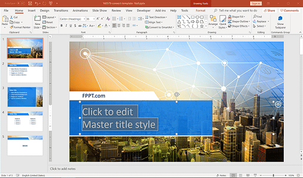

Prezentáció készítése
Ez a tantárgy a prezentáció készítés alapjait tartalmazza.
Tartalom- HTML története, szerkezete
- Szövegformázás
- Háttérszín, kép
- Képek kezelése
- Linkek készítése
- Lista létrehozása
- Táblázat készítése
- Kész weblap készítése
